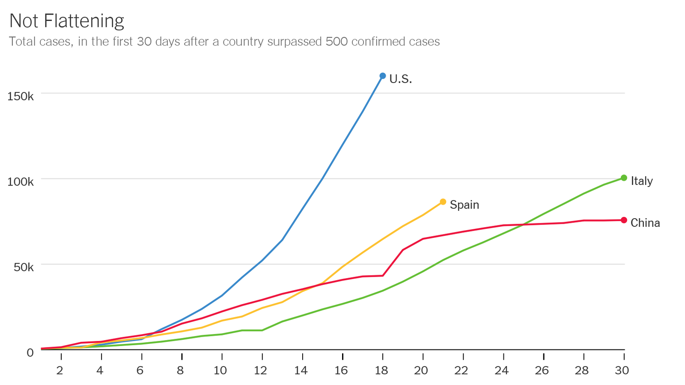
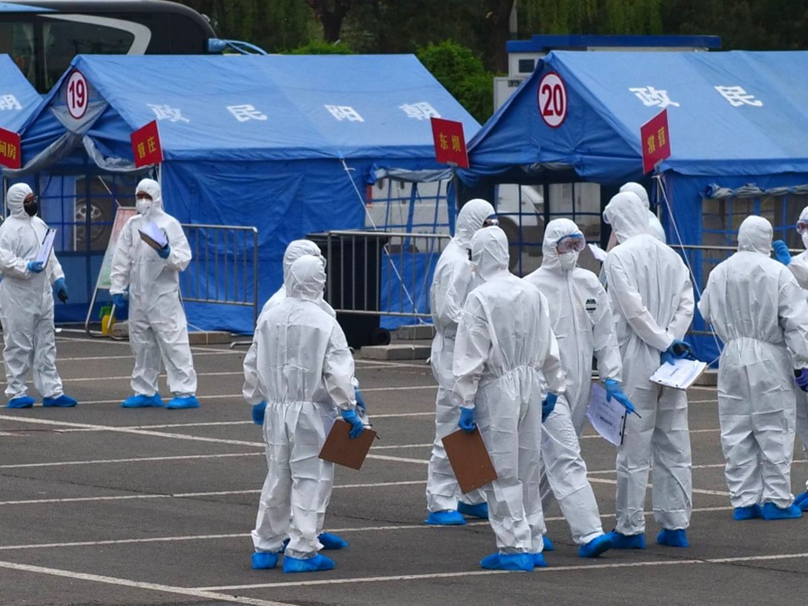
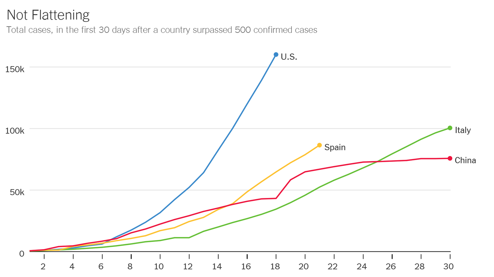
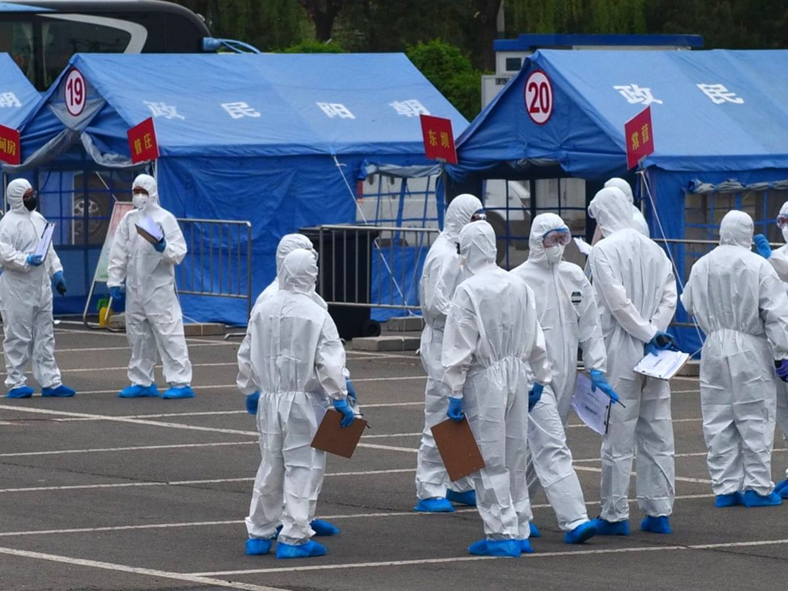

COVID-19
COVID-19 is the disease caused by the SARS-CoV-2 coronavirus. Coronaviruses (CoV) are a large family that causes illness ranging from the common cold to severe conditions such as the deadly Middle East Respiratory Syndrome (MERS-CoV) and Severe Acute Respiratory Syndrome (SARS-Cov). Animals are known to share these viruses commonly. Common signs of infection include respiratory symptoms, cough, shortness of breath, and breathing difficulties. In more severe cases, an infection can cause pneumonia, severe acute respiratory syndrome, kidney failure, and even death.
A Brief History of the Virus
On 31 December 2019, the World Health Organization (WHO) was formally notified about a cluster of cases of pneumonia in Wuhan City, home to 11 million people and the cultural and economic hub of central China. By 5 January, 59 cases were known and none had been fatal. Ten days later, WHO was aware of 282 confirmed cases, of which four were in Japan, South Korea and Thailand. There had been six deaths in Wuhan, 51 people were severely ill and 12 were in a critical condition. The virus responsible was isolated on 7 January and its genome shared on 12 January. The cause of the severe acute respiratory syndrome that became known as COVID-19 was a novel coronavirus, SARS-CoV-2. The rest is history, albeit history that is constantly being rewritten: as of 12 May, 82,591 new cases of COVID‐19 worldwide were being confirmed daily and the death rate was over 4200 per day.
[World Health Organization (WHO)]. (2020, June 15). Coronavirus disease (COVID-19) [Video].
Youtube. https://www.youtube.com/embed/i0ZabxXmH4Y
Sources:
Orjollet, S. (2020, February 22). COVID-19: What we know and what we don't. Retrieved February 23,
2020, from https://news.abs-cbn.com/overseas/02/23/20/covid-19-what-we-know-and-what-we-dont
Nearly 78,000 confirmed cases: Live updates on COVID-19. (2020, February 22). Retrieved February 23,
2020, from https://www.livescience.com/new-china-coronavirus-faq.html
Christensen, J. (2020, February 18). Coronavirus: Should you be worried? Retrieved February 23, 2020,
from https://edition.cnn.com/2020/01/20/health/what-is-coronavirus-explained/index.html
Protection from the virus
How it spread
SARS-CoV-2 is a respiratory virus that spreads primarily through contact with an infected person through respiratory droplets generated when a person, for example, coughs or sneezes, or through droplets of saliva or discharge from the nose. The main cause for it's rapid spread is due to the ignorance and obliviousness of many people. The Chinese government for example, despite knowing about the virus earlier than everyone else, was unable to procede with measures that could potentially have prevented the expeditious increase in cases both nationally and globally.
Face masks and other forms of facial protection
Masks/face shields create a physical barrier that catches droplets from infected people and prevents them from spreading as far into the surrounding air as they normally would. If ever you are in need to go outside, do not forget to wear a mask or any form of face protection.
Social Distancing
Social distancing, also called “physical distancing,” means keeping a safe space between yourself and other people who are not from your household. To practice social or physical distancing, stay at least 6 feet (about 2 arms’ length) from other people who are not from your household in both indoor and outdoor spaces.
Sources:
Hunt, K. (2020, January 30). Bats, the source of so many viruses, could be the origin of Wuhan coronavirus,
say experts. Retrieved February 23, 2020, from https://edition.cnn.com/2020/01/29/health/bats-viruses-coronavirus-scn/index.html?iid=ob_article_organicsidebar_expansion
Nicks, B. A., & Wong, O. (2020, February 21). Retrieved February 23, 2020, from
https://reference.medscape.com/slideshow/2019-novel-coronavirus-6012559#11
Q&A on coronaviruses. (2020, February 11) Retrieved February 23, 2020, from
https://www.who.int/news-room/q-a-detail/q-a-coronaviruses
Coronavirus. (n.d). Retrieved Febuary 23, 2020, from
https://www.who.int/health-topics/coronavirus
 



Sources:
Scanpix, R., & Watad, A. (2020). Internally displaced Syrian girl [Photograph]. United Nations. https://www.un.org/development/desa/dspd/wp-content/uploads/sites/22/2020/04/internally-displaced-syrian-girl-1200x800-846x476.png
National Geographic. (2020). [Photograph]. National Geographic. https://i.natgeofe.com/n/34b354ac-b37a-4e5e-bba5-71de0464613e/01_coronavirus_cdc_2871.jpg?wp=1&w=958.75&h=538.75"
John Hopkins University. (2020). Not flattening [Graph]. The New York Times. https://static01.nyt.com/images/2020/03/31/opinion/31leonhardt-newsletter-chart/31leonhardt-newsletter-chart-jumbo.png?quality=90&auto=webp
STR/AFP VIA GETTY IMAGES (2020). Medical staff members hugging each other in an isolation ward at a hospital in Zouping in China’s easter Shandong Province. [Photograph]. National Geographic. https://www.nationalgeographic.com/science/article/here-is-what-coronavirus-does-to-the-body
Fox News. (2020). Fox News. https://video.foxnews.com/v/6149900720001/?playlist_id=5670932084001#sp=show-clips
STR/AFP VIA GETTY IMAGES (2020). CHINA-HEALTH-VIRUS. [Photograph]. Getty Images. https://www.nationalgeographic.com/science/article/here-is-what-coronavirus-does-to-the-body
- Goal -
To inform and educate people about the coronavirus pandemic.
About
A website dedicated to compiling reliable information and sharing it to the public,
as a way to put a stop to the spread of misinformation that could inevitably be the cause of disasters.
This website also aims to prevent the cycle of the chances of the same events happening again by giving instructions
for the future.